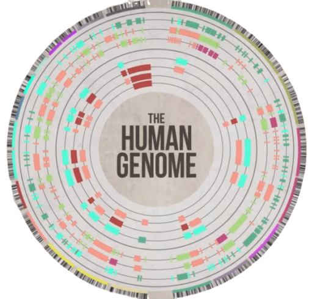
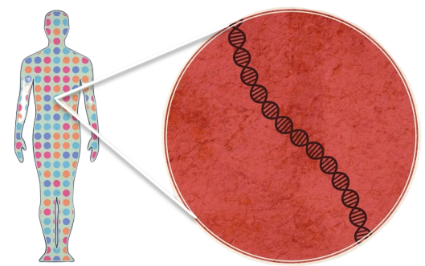

Пројекат секванцирања хуманог генома или познатији под називом Human genome project почиње као међународни програм у 1990. године, а завршава се 2004. године. Овај пројекат покренула је група научника из Америке. Амерички конгрес је финансирао пројекат. Предвиђено је да истаживање траје 15 година.
Идеја је била, да се по завршетку сва открића ставе на располагање научној јавности. Овој групи научника супротставила се група која је финансирана од стране приватних фирми и имала је идеју да открића употреби на другачији начин.
Пројекат је предводио Ари Патриносом, који је био руководиоц Одељења за биолошка испитивања и заштиту животне средине у Одсеку за науку Министарства за енергију САД-а. Францис Колинс је руководио доприносима пројекту од стране Националног института за здравље САД-а. Циљ пројекта је одређивање секвенце парова база које сачињавају ДНК, односно распоред слова A, T, G, C дуж 3 милијарде молекула које ми имамо у ДНК, као и идентификовања и мапирања око 20 000-25 000 гена људског генома са физичке и функционалне тачке гледања. Такође, циљ тих истраживања је био да се нађу гени који узрокују болести и да се те информације примене у развоју специфичних медицинских третмана.Тим открићем добијамо нова знања и о еволуцији.
Радни нацрт је објављен 2000. године и геном је комплетиран 2003. године. Један паралелан пројекат је спровела независно од државних организација корпорација Целера, која је формално започела са радом 1998. Највећи део државно финансираног секвенцирања је извршен на универзитетима и истраживачким центрима у Сједињеним Америчким Државама, Уједињеном Краљевству, Јапану, Француској и Немачкој. Примарни фокус је на идентификацији гена који кодирају протеине и утврђивању њихових функција.
Пре него што је започет пројекат секвенцирања хуманог генома, постојала је претпоставка биолога да људи имају 100 000, базирана на теорији еволуције. Откривено је да човек има око 20 000 гена који синтетишу протеине. Ово откриће изненадило је научнике јер су сматрали да је квантитативно комплексност човека може да се објасни као нагомилавање гена. Ипак, број гена је приближан код већине организама. Оно што нас издваја и чини људском врстом јесте комбинаторика гена. Гени домари се брину о фукнционисању ћелије, а постоје и специфични гени који се налазе у само јендој врсти. Свака врста има своје специфичне гене и има их око 1000. Материјални носилац гена је ДНК, који је дуг и има 3 милијарде слова или нукеотида(код човека).
Оваквим открићем долазимо до тзв “молекуларних провалија”, што значи да еволуција није ишла постепено. Специфични гени који не могу да се нађу код различитих врста називају се гени сирочад (orfan gen). Они немају своје порекло, нису се развијали постепено. За специфичне гене за које се зна функција, везани за више менталне способности. То су способност говора, разумевања, више менталне радње.
ДНК у себи садржи DNA-repair, односно гене који имају способност да поправљају мутације. Резултат истраживања је био је податак да 8% ДНК није људског порекла, него је то вирусна ДНК. Вирусна ДНК је специфично уграђена у хуману ДНК и не постоји начин нити механизам да се вирусна ДНК нестане из хумане. Питање колико је та вирусна секвенца штетна, али на срећу, већина секвенци вирусног порекла су искључени, иначе би се наше тело распало.
Огромна медијска пажња за истраживање почела је у осмој години од почетка пројекта. Доктор Крег Вентер је био незадовољан како се пројекат развијао и био је уверен да постоји јефтинији и ефикаснији начин да се дође до резултата. Метод који је он промовисао зове се shotgun sequencing, а значи секвенцирање генома одједном.
Колико год да се храбрим и прогресивним чинио, овај метод је ипак првенствено био контроверзан, јер је будио сумњу многих стручњака у своју ефикасност и темељност. Како му није пошло за руком за пронађе довољно истомишљеника и финансијера за своје идеје, Вентер је решио да напусти јавни пројекат и окрене се приватном истраживању.
Он је 1998. основао фирму Celera Genomics и најавио да ће имати финалне резултате декодирања људског генома до 2001. Овим потезом је објављен рат генома који није био благонаклон према зараћеним странама, али је, како то често научни ратови умеју да чине, мотивисао и подстакао обе групе научника да побољшају свој рад,максимално му се посвете и заврше научно-истраживачки рад пре него што то учини конкуренција.
Главна разлика у приступу двеју група базирала се на методама које су користиле у секвенцирању. Док је јавни пројекат одабрао да се служи споријом, али методичнијом стратегијом, Целера је одлучила да се држи шотган методе. Разлике, нажалост, нису остале само на овоме.
Група Целера је свој пројекат започела када се и технологија више развила, имали су већу процесорску снагу и бољу опрему у лабораторијама. Оно што су учинили јесте да су преузели јавно доступне резултате супарничке групе.
Научној заједници је највише засметала дистрибуција добијених података. Институције које су учествовале у конзорцијуму су своје податке учиниле јавно доступнима без икаквог ограничења, док је Целера наплаћивала високе чланарине за све оне који су желели да стекну увид у резултате њиховог истраживања. ГенБанка је константно ажурирала податке, а по завршетку пројекта имала је више од 300 000 посета научника. Насупрот њима, конкурентска компанија је имала само педесетак уплаћених чланарина и то од стране фармацеутских компанија. Групи Целера је замерено што дискриминише сиромашне земље које нису имале новац да плате и да добију резултате до који је ова компанија дошла.
Овакав неколегијални и неетички приступ био је трн у оку јавности која је помно пратила у ком се правцу кретао рат генома. Као контрааргумент за своје потезе Целера је користила чињеницу да јавни пројекат користи три милијарде долара од новца пореских обавезника, док она доноси квалитетније резултате за много мање времена и за свега 300 милиона долара из приватних фондова, али тиме није успела да придобије јавно мњење.
Целера је покушала да комерцијализује своје истаживање и тиме је доживела крах. Њен председник, доктор Вентер, отишао је корак даље у настојању да споји науку и бизнис, па решио да поднесе захтев за патентирање 6500 људских гена. На овај начин би носилац патента имао права да тражи наплату од било кога ко би желео комерцијално да користи информације које је он заштитио, макар те информације били и сами гени. Заузврат, Целера је спустила лопту и најавила како ће годишње објављивати резултате декодирања који ће бити јавно доступни, али ће њихова редистрибуција, као и практична употреба бити забрањене.
У марту 2000, амерички председник Бил Клинтон изјавио је како секвенца генома не може бити патентирана, већ она сама и све информације о њој морају бити доступне свима који их желе. Ова изјава је била велики ударац за компанију Целера. Акције из области биотехнологије су пале, и изгубљено је око 50 милијарди долара на берзи за само два дана.
Обе групе су имале различит приступ истаживању и начин реализовања, али неоспорно је да је компанија Целера убрзала процес јавног пројекта не би ли били у корак са темпом који је диктирала компанија Целера. Докази за то су што је првобитни план био да се јавности радна верзија секвенце прикаже 2005.године, а била је доступна већ 2001. Два пројекта су објављена у размаку од једног дана; јавно финансирани пројекат у часопису “Природа”, а приватни у часопису “Наука”. Описане су методе који су научници користили у секвенцирању генома и понуђена је анализа секвенце.
Студија је представљена као заједничко дело свих институција које су учествовале у њеном стварању, па је из саопштења за медије могло да се разуме да су се две струје коначно помириле и решиле да једна другој својим ресурсима помогну, уместо да енергију фокусирају у правцу јавног рата који су водиле. Др Вентер је вишегодишње надметање назвао омањим неслагањем између научника, али је недвосмислено измирење на директан начин потекло из изјаве председника Клинтона. Заједно са премијером Уједињеног Краљевства, Тонијем Блером, шеф Беле куће је одржао драматичан и поетичан говор који је славио достигнуће свих научника који су радили на њему.
Клинтон је надахнуто поредио мапирање генома са Галилејевим звезданим мапама и нагласио како ће деца наше деце за рак знати једино као за сазвежђе. Величао је завршницу десетогодишње трке између завађених научника, и инсистирао на томе да знање о људском геному мора припадати свима и мора бити коришћено од стране свих за добробит човечанства. Шотган метода секвенцирања генома данас је општеприхваћена и коришћена у научној заједници широм света.